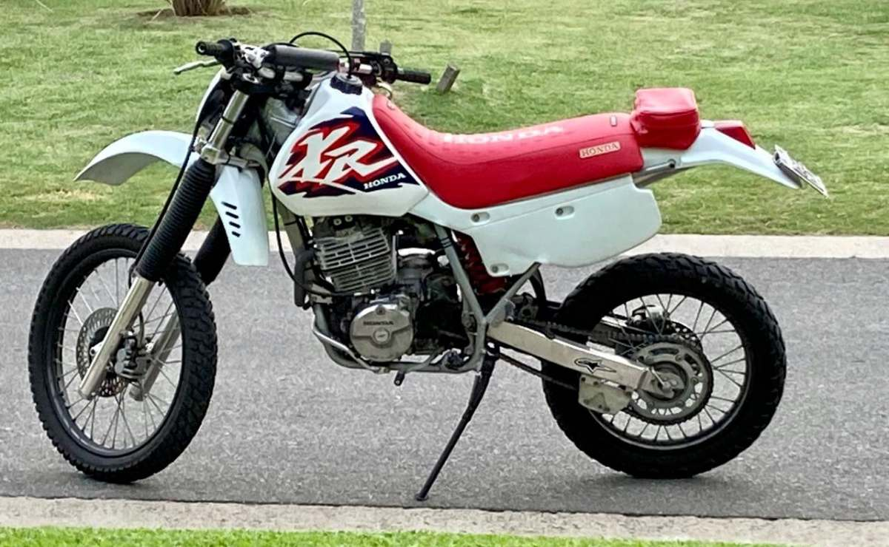
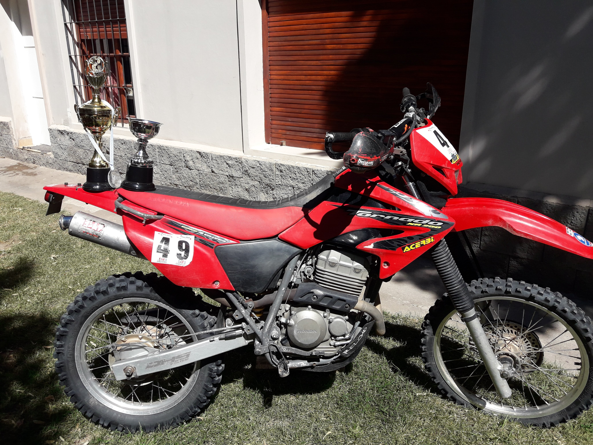

Esta es mi historia

Hola, soy Mario Gustavo Miculian, tengo 55 años y quiero compartir con ustedes la historia de mi vida, una vida que siempre ha estado marcada por mi amor incondicional por las motos y la carretera. Desde muy joven, descubrí la fascinación por los fierros y la libertad que ofrecen las dos ruedas. Aquí les cuento cómo comenzó todo y cómo recorrí cada kilómetro con pasión y entusiasmo.
Los Primeros Pasos sobre Dos Ruedas

Mi amor por las motos comenzó cuando tenía apenas 15 años. Fue en ese entonces cuando mi tío me regaló mi primera moto, una Siambretta. Recuerdo la emoción que sentí al verla, aunque no era la moto más rápida ni la más moderna, para mí era perfecta. Con esa Siambretta, empecé a "boludear" en la chacra de mi familia, explorando caminos y descubriendo la increíble sensación de libertad que ofrece la velocidad. A pesar de sus limitaciones, esa moto despertó en mí una pasión que me acompañaría para siempre.
La Colección y el Primer Gran Salto
Con el tiempo, fui acumulando una colección de motos, cada una con sus peculiaridades. En 1990, decidí dar un gran paso y me compré una Honda XR600. Esta moto representó un cambio significativo en mi vida. No solo comencé a disfrutar de la velocidad en una nueva dimensión, sino que también me animé a participar en carreras. Fue con ella que realmente empecé a vivir la pasión por las motos de manera más intensa.
Aventuras con la Tornado
En 2009, decidí dar un nuevo salto y me compré una Honda Tornado. Esta moto se convirtió en mi compañera inseparable para correr y viajar. Con la Tornado, comencé a recorrer rutas desconocidas, desafiando terrenos difíciles y disfrutando de la aventura del enduro cada fin de semana con amigos. Cada salida era una nueva historia, un nuevo desafío y, sobre todo, una nueva oportunidad para disfrutar de la vida sobre dos ruedas. Cada kilómetro recorrido es un testimonio de mi amor por la carretera y mi sed de aventura.
La Pasión que me define
A lo largo de estos años, las motos no solo me han llevado a lugares increíbles, sino que también me han permitido conocerme a mí mismo de maneras que nunca imaginé. Cada viaje, cada carrera y cada momento sobre la moto ha sido una oportunidad para crecer y para encontrar una profunda conexión con el mundo. Mi historia es la de un hombre que ha encontrado en la velocidad y en los viajes una forma de vida. Desde aquella primera Siambretta hasta mi querida Tornado, cada moto ha sido un capítulo en mi vida, y cada kilómetro recorrido, una historia que contar. Sigo adelante acompañado por mi hijo Franco, mi hija Julieta y el gran Romeo, siempre buscando el próximo desafío, la próxima aventura, con la misma pasión y entusiasmo que me han guiado desde el principio. Porque cuando se trata de seguir una pasión, el camino nunca se acaba y siempre hay más kilómetros por recorrer.